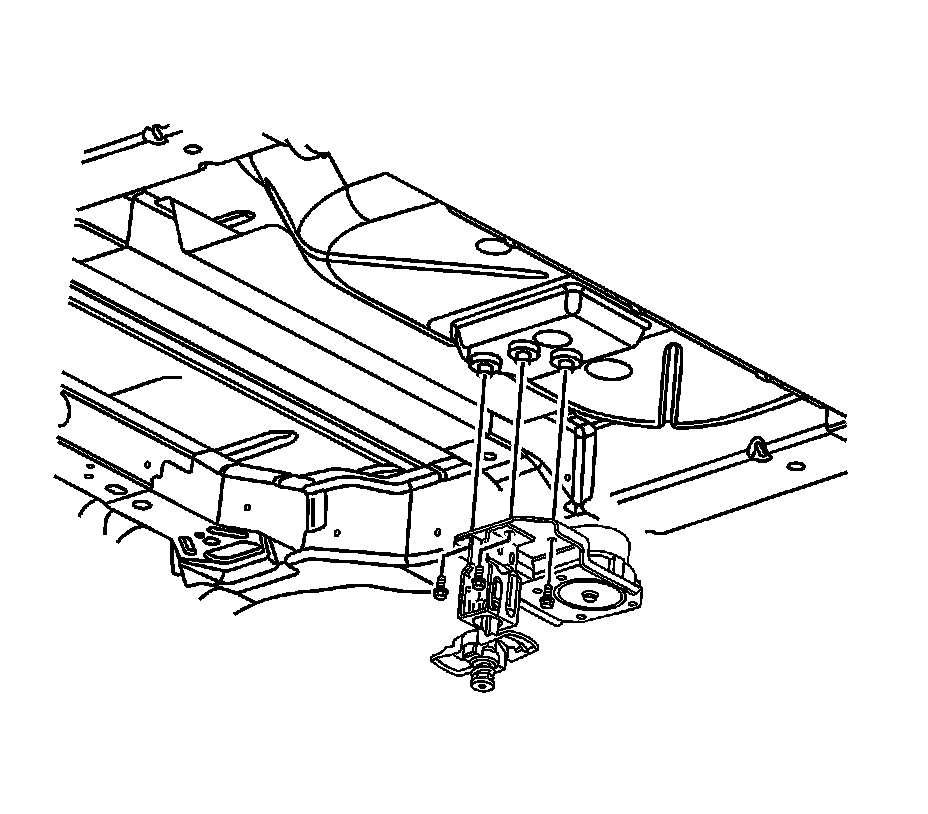

Spare Tire: Service and Repair
Spare Wheel Hoist Replacement
Removal Procedure
Notice: Use only hand tools to lower and raise the spare tire hoist assembly. Do not use air tools. The use of air tools at high speeds will damage the spare tire hoist assembly.

1. Turn the hoist shaft counterclockwise to lower the spare tire to the ground. Continue to turn the hoist shaft until the spare tire can be pulled out from under the vehicle and removed. If the spare tire does not lower to the ground, the secondary latch is engaged causing the tire not to lower.
2. If the secondary latch is engaged and the cable end is visible, perform the following procedure:
1. Tighten the cable by turning the hoist shaft clockwise until you hear 2 clicks or feel it skip twice. You cannot overtighten the cable.
2. Loosen the cable by turning the hoist shaft counterclockwise 3 or 4 turns.
3. If the spare tire can be lowered, repeat steps 1 and 2 to see if the spare tire can be removed.
4. If the spare tire cannot be lowered, turn the hoist shaft counterclockwise until approximately 15 cm (6 in) of cable is exposed.
5. Raise and support the vehicle. Refer to Lifting and Jacking the Vehicle (Service and Repair) .
6. Place a transmission jack, or equivalent, under the spare tire.
7. Position the center of the transmission jack under the secondary latch release button at the center of the spare tire. Arrange the arms of the transmission jack so they will support the tire after it has been released.
8. Raise the jack until the spare tire stops moving upward and is firmly held in place, releasing the secondary latch.
9. Lower the tire. If the spare tire is hanging by the cable, turn the hoist shaft counterclockwise until the tire is low enough to remove.
3. If the secondary latch is engaged and the cable end is not visible, perform the following procedure:
1. Raise and support the vehicle. Refer to Lifting and Jacking the Vehicle (Service and Repair) .
2. Place a transmission jack, or equivalent, under the spare tire.
3. Position the center of the transmission jack under the secondary latch release button at the center of the spare tire. Arrange the arms of the transmission jack so they will support the tire after it has been released.
4. Raise the jack until the spare tire stops moving upward and is firmly held in place, releasing the secondary latch.
5. Lower the tire and remove it from the jack.
6. Raise and support the vehicle if it is not already raised. Refer to Lifting and Jacking the Vehicle (Service and Repair) .
7. Remove the tire hoist assembly mounting bolts.
8. Remove the tire hoist assembly from the underbody.
Installation Procedure
1. Inspect the tire hoist mounting assembly mounting bolts, if damaged and/or worn replace.
2. Install the tire hoist assembly to the underbody.
Notice: Refer to Fastener Notice (Fastener Notice) .
3. Install the tire hoist mounting assembly bolts.
Tighten the tire hoist assembly mounting bolts to 25 N.m (18 lb ft).
4. Install the spare tire to the hoist.
Notice: Use only hand tools to lower and raise the spare tire hoist assembly. Do not use air tools. The use of air tools at high speeds will damage the spare tire hoist assembly.
5. Turn the hoist shaft clockwise until the spare tire is in position and the hoist clicks 2 times or it skips twice. You cannot overtighten the cable.
6. Remove the safety stands.
7. Lower the vehicle.